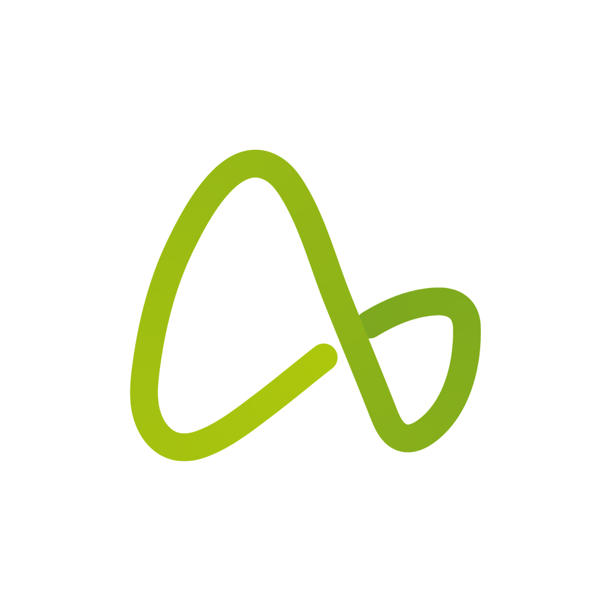
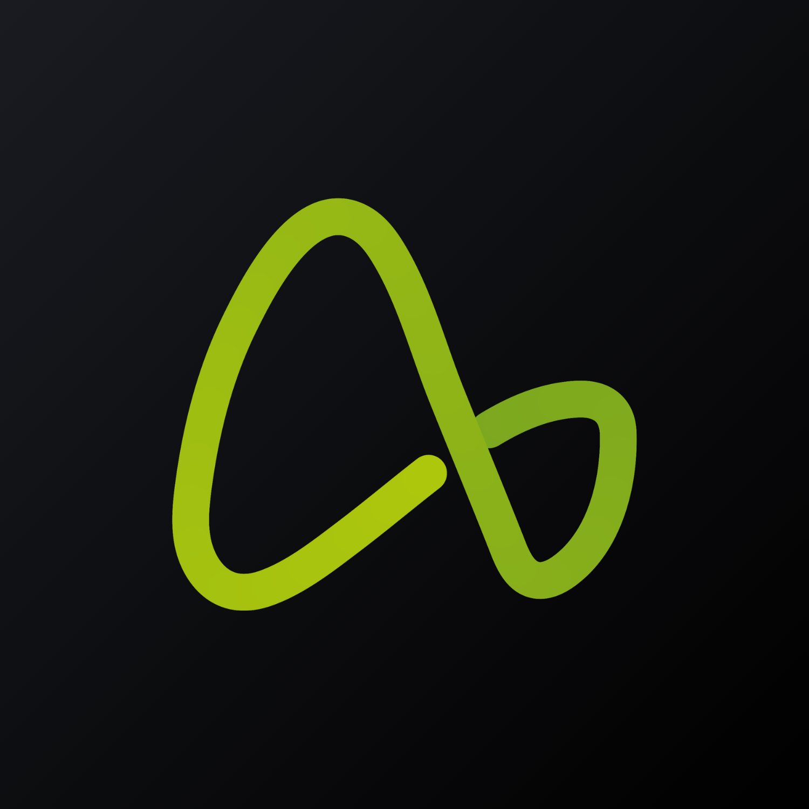
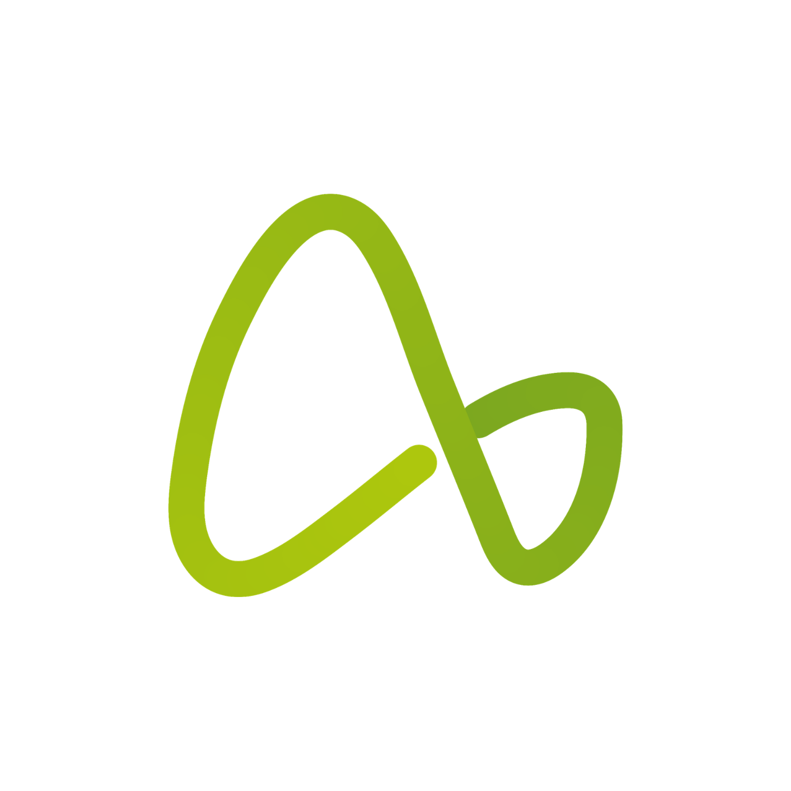
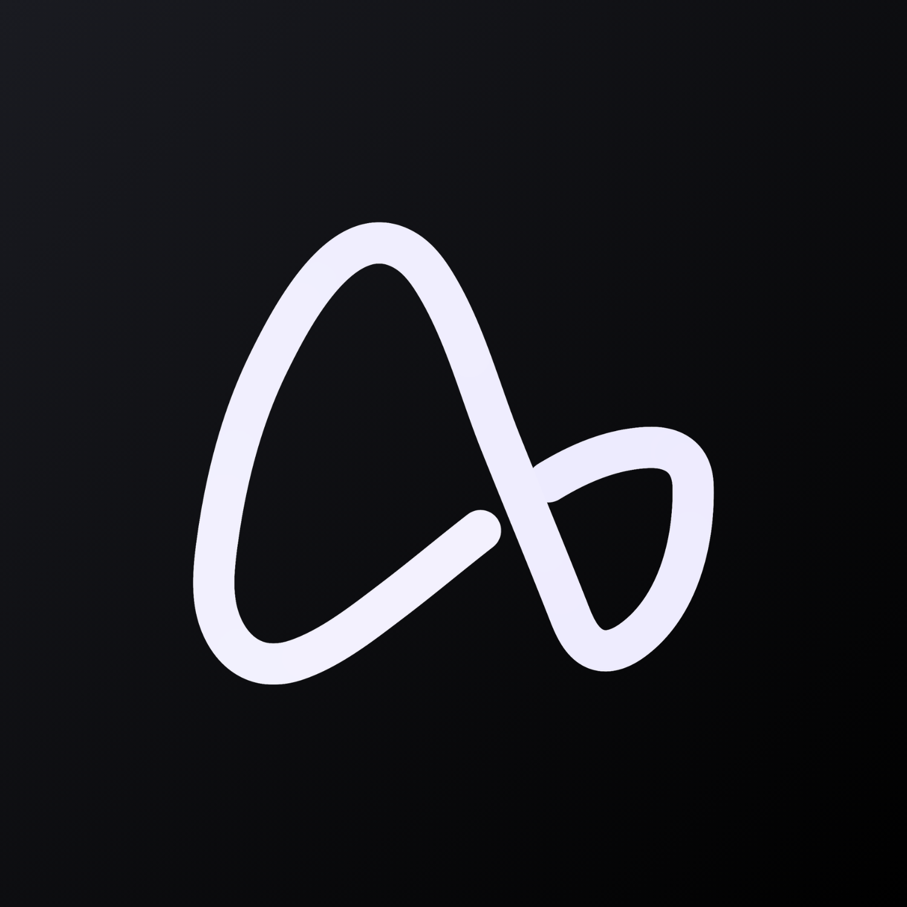

Solid black or white by default, or recoloured in tones of one family, like the imagotipo. Never Synapse. Wherever the full imagotipo cannot be applied: app icons, favicons, small avatars, tight placements.



Keeps its original green, never recoloured. Round frames and other shapes that would crop the square, such as profile pictures. The wave stays well inside the safe area (dashed), clear of the margin. Not used in presentations.

White wave. Internal systems such as the ERP icon. Never on public pieces.